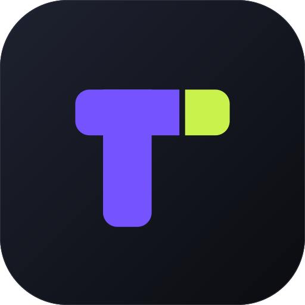
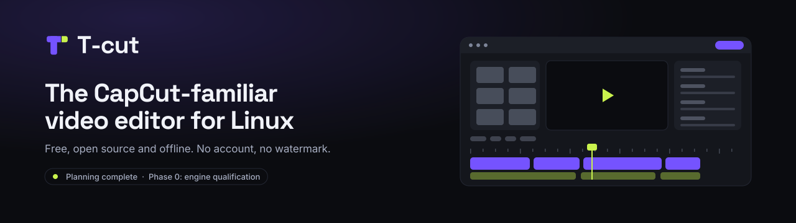

Identity 1.0
The cut T.
The cut T.
One identity. Two themes.
A violet T with a lime section cut from its right arm. Original artwork for an independent Linux editor.
Dusk and Cream
Roles that adapt to your theme
Toggle the theme above. Action, focus and text colors change together. The logo keeps its own violet and lime artwork.
Primary action
A sunset gradient, ember to gold, marks the main action. Its dark label stays readable in both themes.
Signature accent
Bright rose on Dusk; a deeper rose on Cream for readable accents.
Quiet surfaces
Neutral backgrounds keep the content readable without competing for attention.
Vector assets
Use the approved originals
Wordmarks use vector outlines. Keep their proportions, clear space and cut gap intact.
Mark
Download mark SVG
Wordmark
Dark-surface SVGLight-surface SVGApp icon
Download icon SVGDownload icon PNG


Repository and social
Banners ready to use
The editor sketch is a concept, not working software. Keep the coming-soon status accurate when reusing the artwork.
